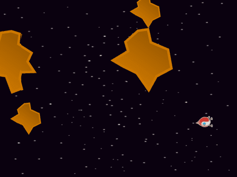
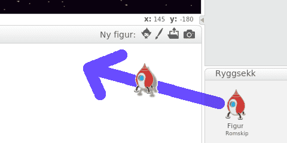
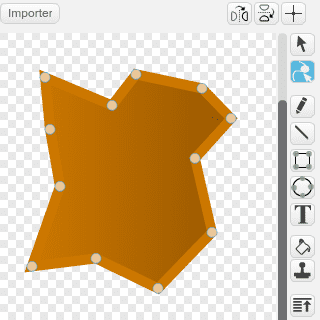

På slutten av 1970-tallet ga Atari ut to spill hvor man skulle
kontrollere et romskip. Det første var Lunar Lander, men dette ble
utkonkurrert av Asteroids som Atari ga ut noen måneder senere.
Spillene var faktisk så like at de kunne gjenbruke mye av teknologien.
Vi skal gjøre det samme! Du må derfor ha laget
Lunar Lander før du begynner på
dette prosjektet. I Asteroids er målet å beskytte romskipet mot
asteroider ved å skyte dem i småbiter.

Oversikt over prosjektet
Mesteparten av kodingen av Asteroids skal du gjøre selv (og noe har
du allerede gjort). I Asteroids vil vi spesielt se på noen av måtene
man kan gjenbruke kode i Scratch.
Plan
Steg 1: Enda et flyvende romskip
I Lunar Lander laget vi et flott
romskip. Nå skal vi se hvordan vi kan bruke det samme romskipet i
dette prosjektet.
Du vet sikkert at du kan Remikse andres Scratch-prosjekter. Du får
da muligheten til å lage din egen versjon av noe andre har gjort, og
spesielt kan du gjenbruke kode andre har skrevet tidligere.
Nå skal vi se på et triks for å gjenbruke kode vi selv har laget
tidligere. Ved å bruke Ryggsekken kan man kopiere figurer og kode
mellom forskjellige prosjekter. Vi vil derfor først kopiere romskipet
vi laget i Lunar Lander.
Sjekkliste

Du vil nå se at alle draktene, alle variablene og alle skriptene til
romskipet er kopiert over. Du kan rydde opp litt ved å slette skript
som ikke har noe med kontrollen over romskipet å gjøre, for eksempel
om du har et Sjekk landing-skript trenger vi ikke det i dette
spillet.
Dette gjør vi ved ganske enkle hvis-tester. Det vi
må huske på er at x-koordinatene på skjermen går fra -240 til
240, mens y-koordinatene ligger mellom -180 og 180. Siden
Scratch passer på at figurer ikke går helt av skjermen flytter vi
dem litt innenfor skjermkanten:
når jeg mottar [Nytt spill v]
for alltid
hvis <(x-posisjon) < [-235]>
endre x med (470)
slutt
hvis <(x-posisjon) > [235]>
endre x med (-470)
slutt
hvis <(y-posisjon) < [-175]>
endre y med (350)
slutt
hvis <(y-posisjon) > [175]>
endre y med (-350)
slutt
slutt
Steg 2: Romskipet kan skyte
Romskipet vårt vil snart fly inn i en asteroidesverm, så vi må
montere raketter som kan sprenge unna asteroidene.
Sjekkliste
Lag et skript på skudd-figuren som starter på Nytt spill-meldingen. Skriptet kan bestå av en for alltid-løkke, hvor du tester på om mellomromtasten
er trykket. Dersom et skudd skal avfyres kan du først la skuddet gå til romskipet og deretter peke i samme retning som
romskipet. Dette siste kan du gjøre med en kombinasjon av pek i retning, retning av og
vend-klosser. Til slutt kan du lage en klon av figuren.
hvis <tast [mellomrom v] trykket?>
vent til <ikke <tast [mellomrom v] trykket?>>
...
slutt
For å kopiere skript mellom figurer kan du bruke ryggsekken på samme
måte som tidligere. En litt raskere metode er å bare dra skriptet du
vil kopiere til den figuren du vil kopiere til.
Kopier koden for å warp'e rundt skjermen fra romskipet til
skudd-figuren.
Steg 3: Pass deg for asteroidene
Da er det på tide å lage en asteroidesverm. Noe av det som er kult
med Asteroids er at asteroidene blir skutt i småbiter når de treffes,
og man må fortsatt passe seg for og skyte disse mindre asteroidene.
Vi vil kode dette ved å bruke kloner i forskjellige størrelser.
Sjekkliste

sett størrelse til ((størrelse) / (2)) %
Hvisstørrelsen fortsatt er større
enn for eksempel 10 kan du lage et par nye kloner av denne mindre
asteroiden. Til slutt kan du slette denne klonen
uansett hva størrelsen er.
hvis <berører [Asteroide v] ?>
vent (0.01) sekunder
slett denne klonen
slutt
Steg 4: Videreutvikling av spillet
Du har nå laget en enkel variant av Asteroids. Men prøv å gjøre
spillet morsommere ved å videreutvikle det. Du bestemmer selv hvordan
du vil jobbe videre, men nedenfor er noen ideer som kanskje kan være
til inspirasjon?
Ideer til videreutvikling
avrund ((100) / (størrelse))
For å vite når du kan gå videre til et nytt nivå må du telle hvor
mange asteroider som flyr rundt. Lag derfor en variabel Antall asteroider som du øker med 1 når en asteroide starter som klon. Deretter må variabelen minke med 1 når
klonen slettes.
Videre bruker du en Nivå-variabel som holder styr på
hvilket nivå spilleren har kommet til.
Forbedre denne siden
Funnet en feil? Kunne noe vært bedre? Hvis ja, vennligst gi oss tilbakemelding ved å lage en sak på Github eller fiks feilen selv om du kan. Vi er takknemlige for enhver tilbakemelding!